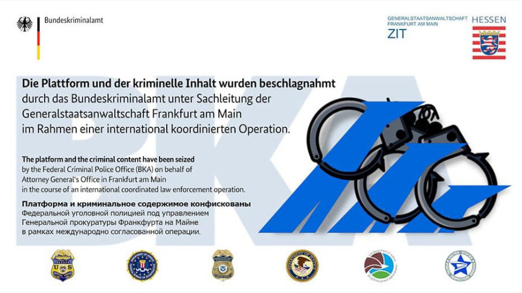
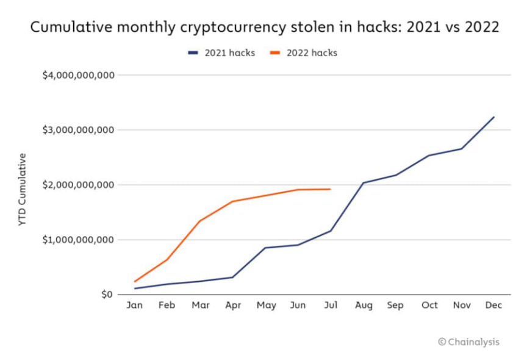
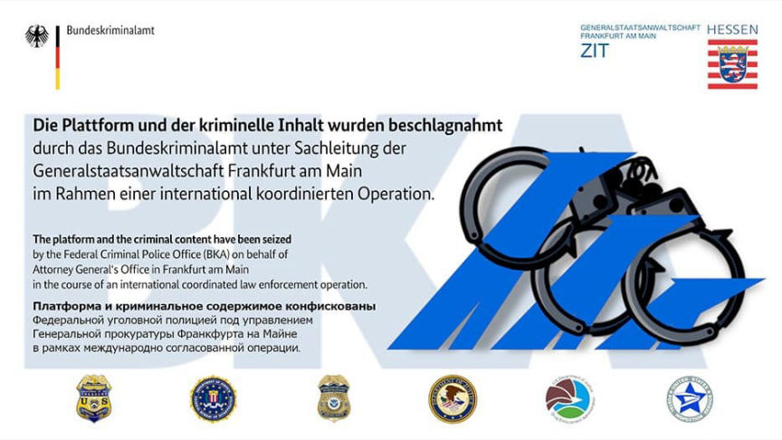
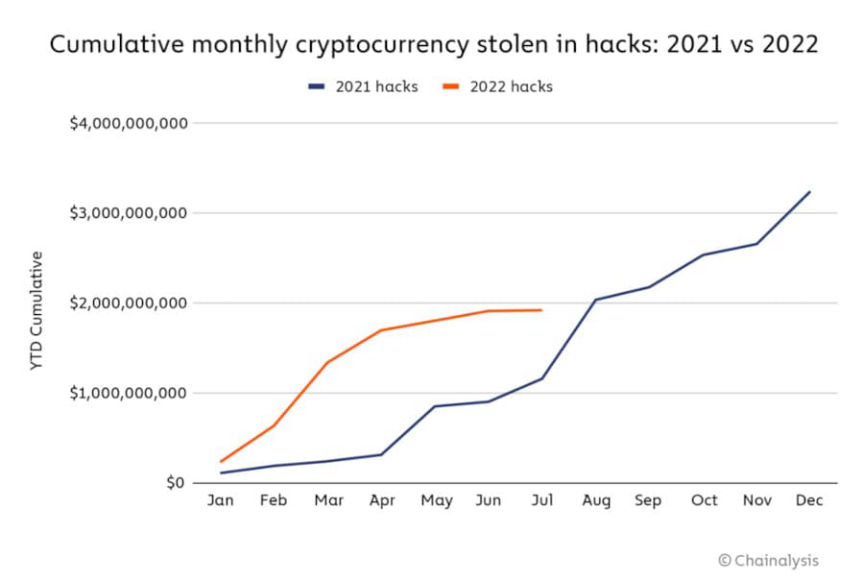

Chainalysis Report: Illicit Crypto Activity Mostly Down in 2022
~3 min read | Published on 2022-08-17, tagged Chainalysis using 653 words.
According to a report from the blockchain analytics firm Chainalysis, criminal activity involving cryptocurrency is declining.
The report first touched on the declining activity across the market; there is less activity than in 2021 through July. However, criminal activity appears more stable: “illicit volumes are down just 15% year over year, compared to 36% for legitimate volumes.”
Scams >
According to the company, the total revenue for cryptocurrency scams is $1.6 billion, which is 65% lower than in July 2021. Also, the cumulative number of transfers to scams is lower than in four years.<thead>
Chainalysis speculated as to the reasons behind the decline in scam-related activity:
“Those numbers suggest that fewer people than ever are falling for cryptocurrency scams. One reason for this could be that with asset prices falling, cryptocurrency scams — which typically present themselves as passive crypto investing opportunities with enormous promised returns — are less enticing to potential victims. We also hypothesize that new, inexperienced users who are more likely to fall for scams are less prevalent in the market now that prices are declining, as opposed to when prices are rising and they’re drawn in by hype and the promise of quick returns.”
Darknet Markets
Chainalysis reported that darknet marketplace revenue is currently 43% lower than the same period in 2021. However, darknet market activity has not been down all year, unlike with scams. In fact, darknet market revenue was tracking higher than in 2021 until April this year. The sudden drop in April is almost certainly due to the shutdown and sanctioning of Hydra Market.

Although overall darknet marketplace revenue fell after Hydra’s shutdown, the number of transactions to the remaining marketplaces increased. Chainalysis:
“We suspect that this increase represents Hydra vendors and customers moving their funds to new markets in search of a replacement. Nevertheless, the decline in darknet market revenue — and indeed, cryptocurrency value received by all criminal categories — following Hydra’s shutdown shows the tangible impact of law enforcement’s growing ability to fight cryptocurrency-based crime.”
Stolen Funds
The company noticed an increase in the amount of stolen cryptocurrency. Through July 2022, $1.9 billion worth of cryptocurrency has been stolen. During the same period in 2021, only $1.2 billion worth of cryptocurrency had been stolen.
This trend may continue to rise: in the first week of August, the cross-chain bridge Nomad suffered a $190 million hack, and someone stole $5 million from several Solana wallets.
Chainalysis thinks the increase in the amount of stolen cryptocurrency is due to the rise in funds stolen from DeFi protocols. They believe that DeFi protocols are uniquely vulnerable because “their open source code can be studied ad nauseum by cybercriminals looking for exploits.”

The company wants law enforcement to continue to use Chainalysis’ services and software in an attempt to catch the hackers responsible for lucrative cryptocurrency thefts. Additionally, they want law enforcement to develop new methods through which they can seize stolen cryptocurrency.
“Nobody likes a crypto bear market, but the one silver lining is that illicit cryptocurrency activity has fallen along with legitimate activity, albeit not as sharply. This is especially encouraging in scams, where the decrease in market hype seems to mean fewer are fooled by scammers, and in darknet markets, where law enforcement’s shutdown of Hydra Market appears to have dampened the entire sector. Still, with huge increases in stolen funds, we can’t afford to rest on our laurels. The public and private sectors must continue to work together and hone their ability to fight cryptocurrency-based crime.”
Mid-year Crypto Crime Update: Illicit Activity Falls With Rest of Market, With Some Notable Exceptions | , archive.is, archive.org
The report first touched on the declining activity across the market; there is less activity than in 2021 through July. However, criminal activity appears more stable: “illicit volumes are down just 15% year over year, compared to 36% for legitimate volumes.”
Monthly cryptocurrency value received by illicit actors in 2022 | Chainalysis
Scams >
According to the company, the total revenue for cryptocurrency scams is $1.6 billion, which is 65% lower than in July 2021. Also, the cumulative number of transfers to scams is lower than in four years.
| 2022’s Top scams | 2021’s Top scams | ||
| Scam name | Vvalue received thru July | Scam name | Value received thru July |
| JuicyFields.io | $273,935,606 | Finiko | $1,164,115,620 |
| Unique-Exchange.co/PARAIBA.world | $267,487,674 | Mind.capital | $506,240,555 |
| OmegaPro.world | $106,449,195 | CashFXGroup.com | $291,597,650 |
Chainalysis speculated as to the reasons behind the decline in scam-related activity:
“Those numbers suggest that fewer people than ever are falling for cryptocurrency scams. One reason for this could be that with asset prices falling, cryptocurrency scams — which typically present themselves as passive crypto investing opportunities with enormous promised returns — are less enticing to potential victims. We also hypothesize that new, inexperienced users who are more likely to fall for scams are less prevalent in the market now that prices are declining, as opposed to when prices are rising and they’re drawn in by hype and the promise of quick returns.”
Darknet Markets
Cumulative monthly value received by darknet markets by year | Chainalysis
Chainalysis reported that darknet marketplace revenue is currently 43% lower than the same period in 2021. However, darknet market activity has not been down all year, unlike with scams. In fact, darknet market revenue was tracking higher than in 2021 until April this year. The sudden drop in April is almost certainly due to the shutdown and sanctioning of Hydra Market.

The seizure banner uploaded by German law enforcement.
Although overall darknet marketplace revenue fell after Hydra’s shutdown, the number of transactions to the remaining marketplaces increased. Chainalysis:
“We suspect that this increase represents Hydra vendors and customers moving their funds to new markets in search of a replacement. Nevertheless, the decline in darknet market revenue — and indeed, cryptocurrency value received by all criminal categories — following Hydra’s shutdown shows the tangible impact of law enforcement’s growing ability to fight cryptocurrency-based crime.”
cumulative monthly value received by darknet markets by year | Chainalysis
Stolen Funds
The company noticed an increase in the amount of stolen cryptocurrency. Through July 2022, $1.9 billion worth of cryptocurrency has been stolen. During the same period in 2021, only $1.2 billion worth of cryptocurrency had been stolen.
This trend may continue to rise: in the first week of August, the cross-chain bridge Nomad suffered a $190 million hack, and someone stole $5 million from several Solana wallets.
Chainalysis thinks the increase in the amount of stolen cryptocurrency is due to the rise in funds stolen from DeFi protocols. They believe that DeFi protocols are uniquely vulnerable because “their open source code can be studied ad nauseum by cybercriminals looking for exploits.”

Cumulative cryptocurrency value stolen in hacks. | Chainalysis
The company wants law enforcement to continue to use Chainalysis’ services and software in an attempt to catch the hackers responsible for lucrative cryptocurrency thefts. Additionally, they want law enforcement to develop new methods through which they can seize stolen cryptocurrency.
“Nobody likes a crypto bear market, but the one silver lining is that illicit cryptocurrency activity has fallen along with legitimate activity, albeit not as sharply. This is especially encouraging in scams, where the decrease in market hype seems to mean fewer are fooled by scammers, and in darknet markets, where law enforcement’s shutdown of Hydra Market appears to have dampened the entire sector. Still, with huge increases in stolen funds, we can’t afford to rest on our laurels. The public and private sectors must continue to work together and hone their ability to fight cryptocurrency-based crime.”
Mid-year Crypto Crime Update: Illicit Activity Falls With Rest of Market, With Some Notable Exceptions | , archive.is, archive.org
I bet this crypto activity is up though